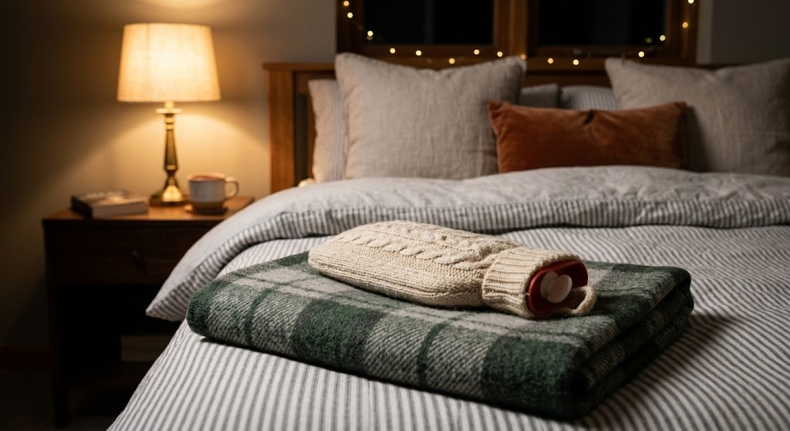

A genuine Japan-made yutanpo hot water bottle - fill it once with hot water and it holds steady warmth for hours, no cord, no electricity, no overheating worries.

Fill with hot water and it just works.
Holds heat far longer than a disposable warmer.
No cord, no overheating risk like an electric blanket.
Refill it every night through the whole winter.
Yutanpo have been used in Japanese homes for generations - a sturdy container filled with hot water, slipped into a fabric cover, and tucked into a futon or bed before sleep.
It's a low-tech answer to a cold bedroom that doesn't involve a cord running across the floor or a device that needs to be unplugged before you fall asleep.
Fill before bedtime and tuck under the covers.
Keep it nearby while working in a cold room.
Useful warmth even if the power goes out.
Yes, that's its traditional use - no cord or electricity involved.
Several hours, depending on starting water temperature and room conditions.
Yes, the fabric cover is washable - check the listing for care details.
A genuine Japan-made yutanpo hot water bottle - see current pricing and availability on Amazon.
Check Price on Amazon →